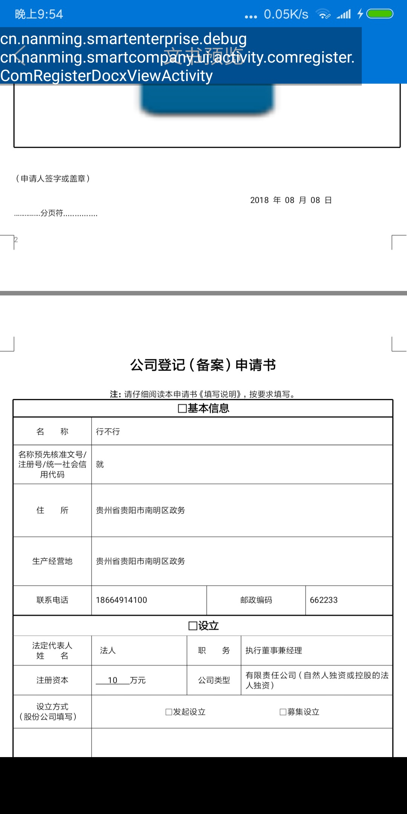
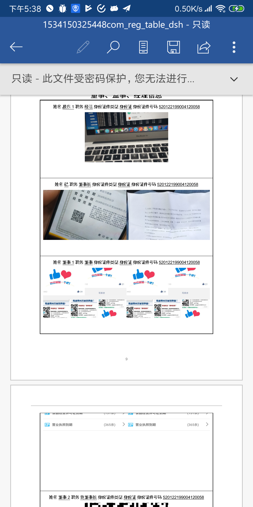
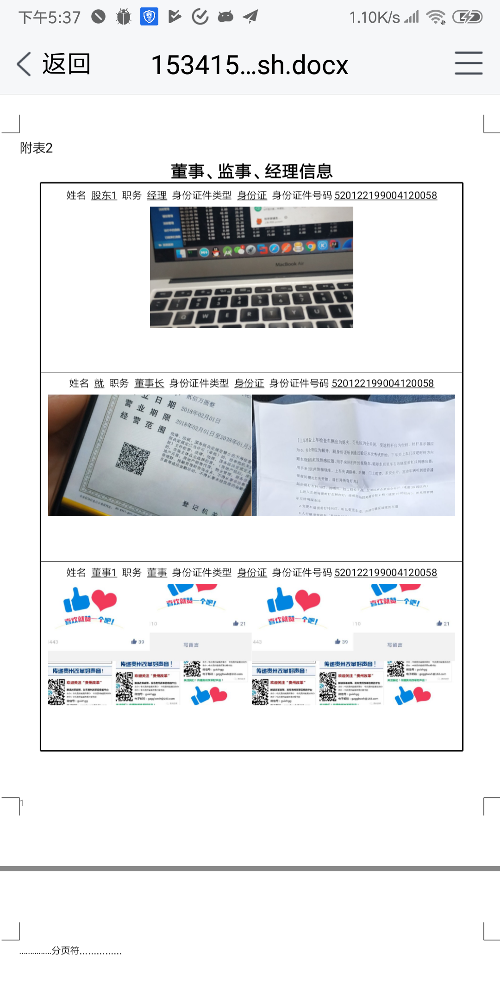

最近的情况是安卓本身没有什么打开docx文档的能力，而项目实在是需要这么一个功能，所以研究良久，还是打算集成一下腾讯的X5内核来打开office文件。网站上所说的，共享微信或者QQ的内核，但是说实话我是果然没有看到有共享的，不知道什么缘故。疑问留在后面，先看如何集成再说。
sdk下载
前往官方网站下载 sdk x5SDK下载。选择下载完整版。
Android Studio
下载完后，压缩包内有一个集成示例，先把 .jar 文件复制放到我们项目的 app/libs 下面。
在 app/src/main/java 下建立目录 jniLibs/armeabi，把Demo内对应的 liblbs.so 文件复制过去。
然后，还要在build.gradle中的 defaultConfig加入如下代码：
ndk {
abiFilters "armeabi", "armeabi-v7a", "x86", "mips"
}
|
初始化
在我们的 Application 内，要加入 初始化的代码：
QbSdk.PreInitCallback cb = new QbSdk.PreInitCallback() {
@Override
public void onViewInitFinished(boolean arg0) {
Log.d("app", " onViewInitFinished is " + arg0);
}
@Override
public void onCoreInitFinished() {
}
};
QbSdk.setDownloadWithoutWifi(true);
QbSdk.initX5Environment(getApplicationContext(), cb);
|
Docx 文档的读取
我们建立一个 Activity 来展示 docx 文档。
布局
布局文件如下：
<?xml version="1.0" encoding="utf-8"?>
<LinearLayout xmlns:android="http://schemas.android.com/apk/res/android"
xmlns:app="http://schemas.android.com/apk/res-auto"
xmlns:tools="http://schemas.android.com/tools"
android:layout_width="match_parent"
android:layout_height="match_parent"
android:orientation="vertical"
tools:context="cn.nanming.smartcompany.ui.activity.comregister.ComRegisterDocxViewActivity">
<cn.nanming.smartcompany.ui.customview.MyActionBar
android:layout_width="match_parent"
android:layout_height="wrap_content"
app:function="left_btn|title"
app:titleText="文书预览" />
<FrameLayout
android:id="@+id/fl_container"
android:layout_width="match_parent"
android:layout_height="match_parent" />
</LinearLayout>
|
代码
我们是利用了 X5中的 TbsViewer来战士docx文档的，这个只能在代码中动态添加，而不能在布局文件内指定。其需要一个 Activity 实例作为参数。
只支持本地文件，所以远程文件必须下载到本地后打开。
private FrameLayout mFrameLayout;
private TbsReaderView mTbsReaderView;
private String filePath;
@Override
protected void onCreate(Bundle savedInstanceState) {
super.onCreate(savedInstanceState);
setContentView(R.layout.activity_com_register_docx_view);
mFrameLayout = (FrameLayout) findViewById(R.id.fl_container);
filePath = getIntent().getStringExtra("file");
if (!TextUtils.isEmpty(filePath)) {
openFile(filePath);
}
}
private void openFile(String path) {
mTbsReaderView = new TbsReaderView(this, new TbsReaderView.ReaderCallback() {
@Override
public void onCallBackAction(Integer integer, Object o, Object o1) {
}
});
Bundle bundle = new Bundle();
bundle.putString("filePath", path);
bundle.putString("tempPath", Environment.getExternalStorageDirectory() + File.separator + "temp");
boolean b = mTbsReaderView.preOpen("docx", false);
if (b) {
mTbsReaderView.openFile(bundle);
}
mFrameLayout.addView(mTbsReaderView);
}
@Override
protected void onDestroy() {
super.onDestroy();
mTbsReaderView.onStop();
}
|
如上代码就能让我们展示传递过来的文件路径了。
结果

存在问题
无法加载
按照官方的说法，会优先共享 微信 QQ时使用的X5内核。但无法保证一定会这样。所以我想的是要让APP果然能自动进行下载内核。但一直没有方法，最后是从文件着手进行分析的。
经过一段时间的摸索，发现加载内核后会在 /data/data/cn.xxxx... 目录下生成一系列的 app_开头的目录。
app_dynamic_jar_output
app_tbs
app_textures
app_webview
|
当我把这个目录清空后，则会进行初始化（我把所有的QQ系的应用全删了）。
而我只是删除 app_tbs 目录的话，内核不会自动进行下载，初始化设备。
我猜想，在这个APP的某个地方，已经设置了一个标志位来表示内核已经下载了这样。但还未进行深入的研究。
对于代码写入表格无法显示
在docx中，用Poi写入表格的行，无法显示出来。而用msword打开则是正常的。这应该是docx插件的问题，因为即使在手Q上也是无法打开。


我的解决办法是：先在表格内写入大量行，最后根据用了多少，把不用的给remove掉。